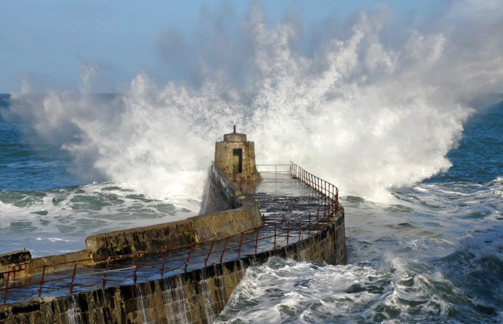

As the surface of the world’s oceans continues to warm, scientists at the University of California, Santa Cruz have revealed a direct association with increased wave energy globally. Publishing their work in Nature Communications, the study authors note that coastal communities around the world will be especially impacted, particularly in the face of sea level rise and increased frequency and intensity of storms.
In fact, wave power has increased globally by 0.4 percent per year since 1948, and this increase is correlated with the increasing sea-surface temperatures, both globally and by ocean regions," said lead author Borja G. Reguero, a researcher at UC Santa Cruz Institute of Marine Sciences, in a statement.
To find this relationship, the team analyzed energy that is transmitted from wind and transformed into wave motion, an energy known as “wave power”. They found that as ocean surfaces warm the energy contained in waves have similarly increased and, because sea-surface temperatures influence wind patterns around the world, it’s a vicious cycle that ultimately feeds into making ocean waves even stronger.
“For the first time, we see the effect of global warming in wave climate”
"This study shows that the global wave power can be a potentially valuable indicator of global warming, similar to carbon dioxide concentration, the global sea level rise, or the global surface atmospheric temperature," said study co-author Inigo J. Losada.
A number of recent studies have shown that climate change is dramatically changing the world’s oceans, from slowing down some of the world’s most influential currents to increasing ocean acidification to the point of literally dissolving the shells of sea snails. A recent report published in Science found that the world’s oceans are heating up at an even faster rate than the world has anticipated – resulting in increased rainfall, rising sea levels, and destruction of coral reefs, as well as losses in ice sheets, glaciers, and ice caps.
When it comes to wave energy, the authors note that coastal communities that rely on infrastructure to protect harbors and homes will be disproportionately impacted considering wave action is the main driver of coastal change and flooding, especially in the face of sea level rise. Understanding how these compounding factors might impact such communities will help to better inform protection measures in the future – but only if people are willing to act quickly.
"Our results indicate that risk analysis neglecting the changes in wave power, and having sea level rise as the only driver, may underestimate the consequences of climate change and result in insufficient or maladaptation," explained co-author Fernando Méndez.